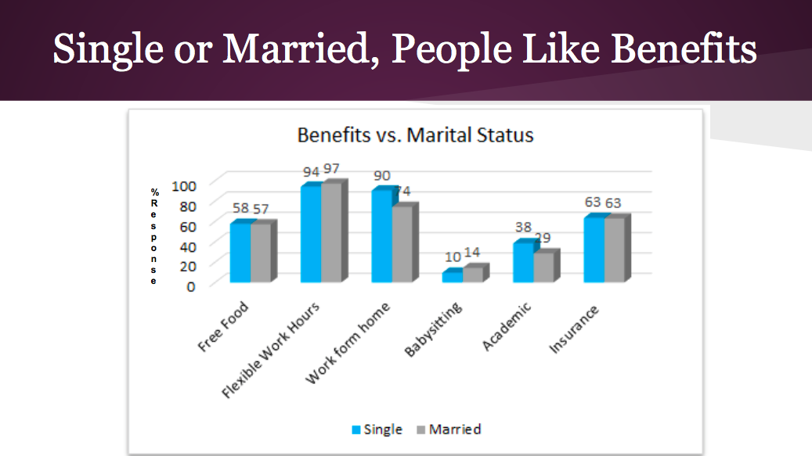
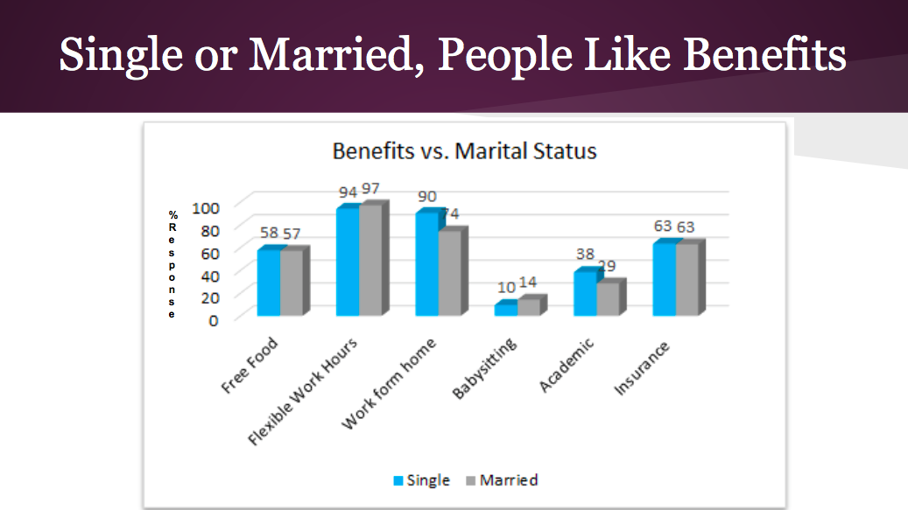

Hi, I'm Darshana Sivakumar
I'm a product manager & technologist with a deep passion in UX design
I am passionate about technology, data, design, entrepreneurship, startups and social innovation.
I received an MS in Software Management from Carnegie Mellon Silicon Valley - a program that encompasses product innovation, entrepreneurship, and management. I am interested in product management, user experience design and software development. I have done certified coursework in Human-Centered Design for Social innovation and Human-Computer Interaction.
For fun, I enjoy doing design and artwork, some samples of which can be found at behance.net/darshanasivakumar. I also enjoy reading (anything - from tech trends to fiction), traveling and playing ultimate frisbee.
I also write a little bit, and you can read my ramblings at medium.com/@darshanasivakumar .
I'm currently a Senior Product Manager at Amazon Web Services, where I work on user experience and database products. I also have work experience at Goldman Sachs, Groupon and an ed-tech startup in India called Classle.

 
I summarized our research using this infographic below.

I summarized our research using this infographic below.